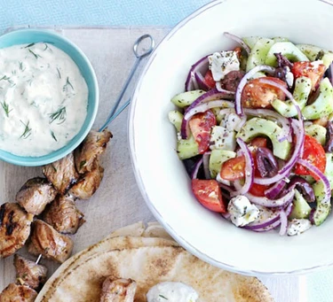

Make a fresh and colourful Greek salad in no time. It's great with grilled meats at a barbecue, or on its own as a veggie main.

Place 4 large vine tomatoes, cut into wedges, 1 peeled, deseeded and chopped cucumber, ½ a thinly sliced red onion, 16 Kalamata olives, 1 tsp dried oregano, 85g feta cheese chunks and 4 tbsp Greek extra virgin olive oil in a large bowl.
Lightly season, then serve with crusty bread to mop up all of the juices.